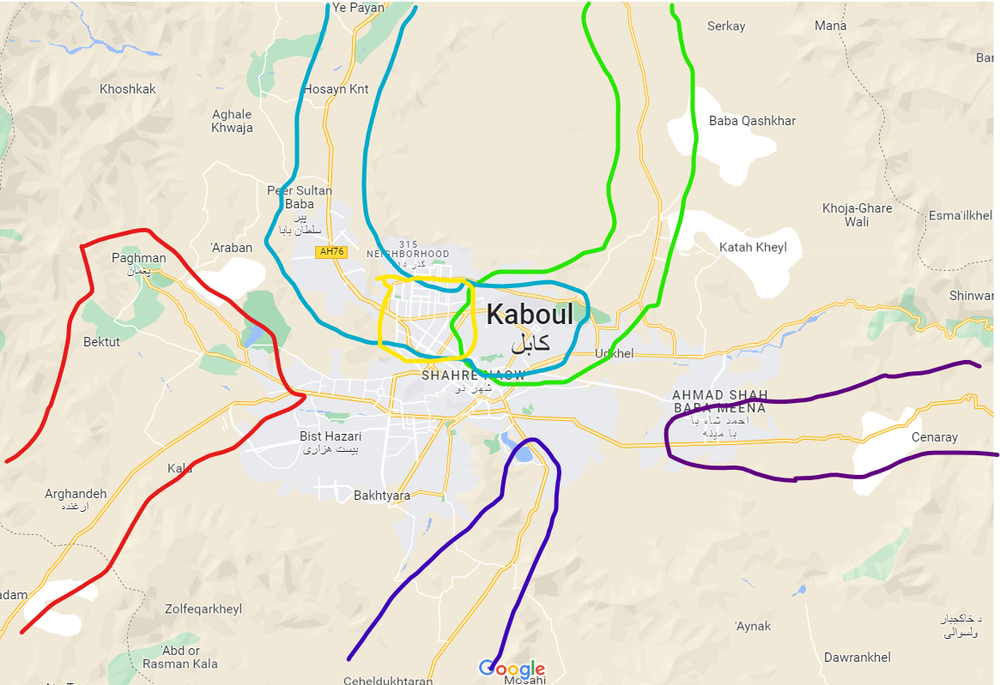

L’Afghanistan est un État relativement récent, mais pourtant terriblement archaïque. Ce n’est pas un État-nation et même s’il peut tenir le rôle d’un pont entre les grandes civilisations qui le voisinent, on lui trouve des éléments qui n’existent nul part ailleurs.
L’Afghanistan trouve naissance dans les chaînes montagneuses de l’Hindu Kush et en fait, l’Afghan de Afghanistan n’existe pas. Ce sont les Iraniens qui ont décidé de ce nom là durant le Moyen-Age car si le Kazaqstan est le pays des Kazaq ou le Pakistan le pays des « Purs » (Paki), l’Afghanistan n’est, originellement, le pays de personne. L’identité afghane ne se fonde donc pas sur une identité ethnico-religieuse commune, mais en réaction à l’identité de ses voisins. Cette dés-unité explique alors l’organisation tribale du pays.
Mais paradoxalement, si l’Afghanistan n’est le pays de personne, ce n’est pas que personne n’y vit, c’est juste que la grande majorité des ethnies s’étend ou a des ramifications dans les pays d’à côté. Les Tajiks (تاجيک /Тоҷик) et les Pachtouns (پښتانه ), qui représentent les trois quarts des habitants du pays, ne sont qu’une minorité dans le sens où les Tajiks ont un pays séparé (Tajikistan), alors que sur les 50 millions de Pachtouns, 15 vivent en Afghanistan et 35 au Pakistan. Cette mosaïque de minorités étrangères a donc d’importantes conséquences sur les relations que Kabul entretient avec l’étranger.
| Ethnie | Nombre en Afghanistan en Million ( % des Afghans) | Nombre total (en Million) |
|---|---|---|
| Pachtoun | 15 (~ 40%) | 50 |
| Tajiks | 9 – 11 (~ 25%) | 18 - 25 |
| Hazara | 5 – 8 (5 – 10%) | 9 |
| Ouzbeks | 3,5 (6%) | 35 |
On pourrait penser qu’avec le temps ces problèmes ethniques et tribaux aient pu se lisser, comme en Occident. Mais l’Afghanistan a des siècles de retard sur le reste du monde. La dernière lumière qui s’est posée sur les vallées encaissées du Panjshir ( پنجشیر , « Cinq lions », vallée du nord du pays, peuplée de Tajiks) ou le Band e Amir (« Le barrage du prince ») est l’Islam, apparue il y a plus de mille ans dans le pays. L’Hindu Kush isole magnifiquement le pays du reste du monde. Il n’y a que très peu de route et même si une grande partie de la population vit du nomadisme pastoral, les déplacements et les communications restent limités. Cette géographie toute particulière accroît encore plus les problèmes de division sociale et ethnique cités plus haut.
Néanmoins, depuis la fin du XXe siècle, le nationalisme afghan s’est développé d’une manière considérable et cela grâce à plusieurs facteurs. Premièrement, l’occupation russe du pays entre 1979 et 1989 a rapproché les afghans dans le but de libérer leur pays. Cela n’a pas empêché qu’une guerre civile éclate dès le départ de l’Armée rouge, mais le premier pas fut fait.
Ensuite, la révolution iranienne de 1979 a accru les tensions avec le pays sous forme d’affrontement sunnisme-chiisme. Cela a conforté un des seuls liens que les afghans entretiennent entre eux, la religion. En ce sens, ils furent soutenus par les Pakistanais et les Américains. Mais ce retour à la religion en réaction à la laïcité soviétique et à la rivalité iranienne donnera naissance au mouvement des talibans, qui plongera le pays dans plusieurs décennies de guerres civiles, maintenant principalement entre mouvement religieux sunnites. Nous allons donc voir comment les ingérences étrangères en Afghanistan ont façonné l’identité afghane durant les années 1978 – 1996.
On pourra d’ailleurs noter que ces trois ingérences étrangères sont en lien avec la géographie même du pays. Ainsi les Soviétiques viennent du Nord, les Iraniens viennent de l’Ouest et les Pakistanais se trouvent au Sud du pays. Aucun élément étranger ne vient de l’Est car il n’y pas d’Est Afghan. Si le pays possède bien une frontière avec la Chine, celle-ci fait moins de 80km et est impénétrable, intraversable, rendant le pays complètement étanche aux déplacements et communications pré-industriels. Comme preuve en est que lorsque l’on traverse la frontière politique entre les deux pays, on traverse également plusieurs fuseaux horaires (si il est 4h30 en Afghanistan, il est 8h à seulement 5 kilomètres, en Chine), comme s’il existait un trou dans l’espace-temps.
La rentrée de l’Afghanistan dans l’Histoire Moderne : l’occupation russe du pays
حکمت شورش افغانستان
L’occupation soviétique du pays, qui débuta en 1979, marqua une nouvelle phase de la guerre froide. Mais encore une fois, cette invasion avant d’être mise dans la perspective de la guerre froide, doit être mise dans une perspective purement afghane. Alors que traditionnellement les partis socialistes font fi des divisions ethniques et culturelles, le parti communiste afghan avait une forte attache tribale, comme tous les autres partis du pays. Ainsi le Parti démocratique populaire d’Afghanistan ( حزب دموکراتیک خلق افغانستان Hezb e Demokratik e Khalq e Afghanistan), qui prit le pouvoir en 1978, était divisé en deux branches :
- les Khalq (le peuple) dirigé par Nour Mohammad Taraki, se base principalement sur le prolétariat urbain pachtoun
- tandis que le Parcham (le Drapeau), de Babrak Karmal, est issu des classes supérieures parlant le dari ( zaban e dari , la « langue de la cour » en persan, des iraniens donc).
Si au début de la révolution communiste, c’est le Khalq, et donc Taraki qui prend le pouvoir, des luttes d’influences commencent déjà à miner le parti. Un autre membre du Khalq, Hafizallah Amin (pachtoun) renverse alors Taraki. Moscou, alliée aux communistes afghan regarde cependant ces dirigeants avec méfiance. Ainsi comme expliqué plus haut, la majorité des Pachtoun vivent au Pakistan, pays alors allié à la fois aux Etats-Unis et à la République populaire de Chine, les deux ennemis de l’URSS dans la période. Par peur que Amin ne se rapproche de ses confrères pakistanais, les soviétiques s’emparent de Kabul et exécutent Amin. L’occupation soviétique de l’Afghanistan commence donc après une querelle ethnique.
L’Armée Rouge remplace Amin par Babrak Karmal (Tajik) car même si les Russes sont en froid depuis plusieurs décénnies avec Tehéran, d’autant plus que la révolution islamique inquiète l’URSS dans laquelle vivent 50 millions de musulmans, le régime iranien est encore plus en conflit avec Washington, aucun risque donc que Karmal ait des sympathies américaines.
Si le régime communiste à Kabul n’est pas là depuis très longtemps, il s’est néanmoins aliéné une grande partie de la population par son anti-religiosité, car même si le pays est en voie de modernisation depuis les années 60, celui reste très religieux, notamment sous l’influence de la République Islamique du Pakistan, qui ne fonde son identité que sur l’Islam. L’Afghanistan était donc déjà à la veille d’une guerre civile avant le coup d’état soviétique, ce qui motive encore plus son intervention dans le pays. Karmal (et avant lui Amin), qui n’est soutenu que par les Russes, réussit l’exploit d’unir tout un pays, depuis toujours fragmenté, contre sa personne et son régime.
Durant la période 1975 – 1980, les milices naissent en Afghanistan comme les fleurs un jour de printemps. Si toutes ont un seul et même objectif, leurs bases ethnico-religieuses les empêche de se réunir, et cela même si une bonne part d’entre elles s’appellent Jamiat ( جمعیت « la communauté »). Néanmoins la résistance islamiste ne fait pas entièrement l’unanimité dans la population locale. Par exemple la prise de Kundoz en 1988 par les mujahidins est un grand échec pour le gouvernement de Kabul car son aéroport et la route qui mènent de l’URSS à Kabul en passant par Kundoz sont tout les deux vitaux pour le gouvernement de Najibullah. Mais le mauvais traitement des civils par les résistants leurs aliènent la population locale, ce qui permet aux loyalistes de reprendre la ville peu de temps après.
L’échec de l’unité : le retrait des russes et les guerres civiles
خروج شوروی
Minant leur économie et leur image à l’internationale, les soviétiques comprennent vite que leurs aventures afghanes leurs coûtent beaucoup trop. C’est pour cela qu’ils décident à partir de la première moitié de la décennie 1980 de se retirer progressivement du pays et de laisser le problème afghan se régler seul. Ils remplacent Karmal par Mohammad Najibullah, un autre Tajik. Celui-ci mène plusieurs réformes dans l’espoir d’assurer la cohésion de son pays (l’abandon des symboles communistes, la promotion de l’Islam comme religion d’État, cessez-le-feu avec les Mojahedins etc. . . ). Najibullah et Gorbatchev promeuvent l’idée de réconciliation nationale devant l’échec de la suppression des groupes de résistant.
Une Loya Jirga, cérémonie traditionnelle qui se fait à chaque bouleversement politique (comme lors du couronnement d’un nouveau roi) entérine une nouvelle constitution en 1987. Largement inspiré par la Perestroika voisine, Najibullah déclare en octobre 87 que « Notre révolution n’est pas une révolution prolétarienne ou socialiste » . Mais toutes ces réformes ne suffisent pas à faire la concorde nationale, seul le Hezbollah e Afghanistan, une milice chiite formée par Teheran cesse de combattre (et seulement provisoirement). Même au sein du PDPA, les réformes sont trop ambitieuses pour les membres du Khalq et pour les Parchami qui soutiennent encore Karmal. Des élections sont prévues en 1988 mais celles-ci sont largement boycottées par les révoltés.
La même année, les accords de Genève entérinent le départ des troupes soviétiques, ce qui laissent le pays aux mains des milices. Deux millions d’Afghans sont morts durant l’occupation russe, tandis qu’environ un tiers du pays s’est réfugié au Pakistan, dont les provinces du Nord-Est étaient déjà une base arrière pour plusieurs milices qui avaient une composante majoritaire Pachtoun, où les ouléma déobandistes ont joué un grand rôle dans la radicalisation des divers groupes islamistes.
La guerre civile de 1992-2001 et l’échec de l’identité afghane
جنگ داخلی افغانستان ۱۹۹۲- ۲۰۰۱
Dès le départ des russes, la situation s’empire pour les communistes qui ne controlent plus guère que Kabul et sa banlieue. Mais malgré le départ de l’Armée Rouge, le gouvernement de Najibullah réussit à tenir encore trois ans jusqu’en 1992, ce qui montre quand même qu’il avait quelques capacités, ne tenant pas exclusivement grâce aux soviétiques. Néanmoins si dès la fin de l’URSS les russes ont réussi à se séparer de la guerre d’Afghanistan, les afghans n’ont pas su se relever de l’occupation soviétique. Pour éviter une nouvelle guerre civile, les divers groupes Mojahidins négocient un partage du pouvoir au sein d’un nouveau gouvernement. L’influence du Commandant Ahmed Shah Massoud (احمد شاه مسعود) est très importante pour le succès de ce partage, qui est entériné à la conférence de Peshawar en avril 1992.
En effet Massoud, Tajik, jouit d’une image très positive, à la fois dans son pays car les territoires sous son contrôle furent les moins affectés par la guerre contre les communistes, ainsi qu’à l’internationale, sa résistance face aux soviétiques étant considérée comme un élément majeur ayant mené à la fin de l’URSS et de la guerre froide.
Quasiment tous les groupes armés rejoignent l’accord et pour la première fois depuis plusieurs siècles, le gouvernement d’Afghanistan est vraiment afghan. Des representants de toutes les milices intègrent la chambre des députés et donc, in extenso, des representants de toutes les communautés ethniques et religieuses. Grâce aux négociations de Massoud et de sa Jamiat e Islami (Tajiks sunnites), les membres du Hezb e Islami e Khalid (pachtouns sunnites), du Hezb e Wahdat (Chiites, principalement des Hazaras) et du Junbish e Milli ye Islami (ouzbèkes et turkmènes sunnites, anciennement communistes) rejoignent le gouvernement.
Mais un homme va faire échouer les accords. Gulbuddin Hekmatyar, le Chef du Hezb e Islami e Gulbuddin, une milice sunnite pachtoun, déclare que la victoire contre les communistes lui revient et marche contre Kabul. Massoud va alors placer sa nouvelle alliance à la défense de Kabul. Le Hezb e Islami Gulbuddin assiège la capitale pendant 4 ans.
Carte des milices présentes à Kabul durant les accords de Peshawar
En rouge l’Ittihad
En bleu le Jumbesh e Milli
En vert la Jamiat e Islami
En Jaune le Hezb e Wahdat
En bleu foncé le Hezb e Gulbuddin
En violet le Harakat e Inqelab
Pendant ces quatres ans, les alliances entre milices évoluent beaucoup. Certaines se créent tandis que d’autres fusionnent. C’est à ce moment là que les arabes investissent massivement en Afghanistan. En effet, l’islam promu par ces differents groupes islamistes diffèrent grandement. Certains sont déobandistes (Islam indien), comme dans le Hezb e Islami, le Jamiat e Islami est républicain et démocrate, ce qui ne plaît guère aux autres puissances islamiques (Pakistan, Monarchies du Golfe et Iran). Le Pakistan soutient déjà massivement le Hezb e Gulbuddin dans son effort de guerre, alors l’Arabie Saoudite crée une milice wahhabite, le Ittehad e Islami. Les monarchies salafistes envoient aussi bon nombre de volontaire, dont un fameux médecin, Oussama Ben Laden.
Mais aucun de ces groupes ne remportent l’avantage par rapport aux autres, jusqu’à l’année 1994. Devant l’échec de Hekmatyar à prendre Kabul, le Pakistan change de stratégie. Depuis l’exode massif d’afghan sur son territoire, des groupes communautaires se sont formés. Un, en particulier, réussit à regrouper plusieurs milliers de partisans dans son idéologie deobandistes : le groupe des Talibans. Formé à Peshawar à quelques kilomètres de la frontière afghane, le groupe a réussit à revenir en Afghanistan et à prendre la ville de Kandahar, carrefour stratégique du sud du pays. Problème des Talibans : si le groupe fait la promotion des intérêts pachtouns et sunnites, c’est en fait une tête de pont Pakistanaise en Afghanistan. Selon un document du Département d’État américain datant de 1998, entre 20 et 40 % des soldats Talibans sont Pakistanais. Le document continue en estimant que 3000 de ces combattants sont aussi originaires des pays arabes ou d’Asie centrale (ex républiques soviétiques) et que sur les 45 000 miliciens qui combattent l’alliance de Massoud, seulement 14 000 sont afghans. Les arabes cités dans ce document font principalement parti du groupe de ben Laden, Al Qaeda. Ce groupe salafiste s’est en effet alliés au Taliban, échappant au contrôle du Royaume Saoudien. Le Mullah Omar, chef des Talibans est marié à une des filles de Oussama ben Laden et il refusera de l’extrader aux américains après le 11 septembre 2001.
Rapidement les Talibans s’emparent de la capitale, contraignant Massoud à la défensive dans sa région natale le Panjshir, dans le nord du Pays. S’il jouit d’une image positive grâce à sa victoire contre les soviétiques, les occidentaux ont néanmoins abandonné leur soutient après le départ de l’armée rouge, laissant le pays libre pour l’ISI (Inter-Services Intelligence, services secrets pakistanais) ou les volontaires arabes. Néanmoins, après la prise de Kabul, les Taliban afghans se différencient assez rapidement des pakistanais, notamment après 2001, alors qu’Islamabad soutient les États-Unis dans leur guerre contre le terrorisme. C’est donc un mouvement purement afghan (à très grande majorité pachtoun sunnite néanmoins), qui à l’instar d’une marque, possède des succursales, comme les talibans pakistanais, qui ont annoncé récemment la reprise du conflit avec Islamabad. De plus, les Talibans, bien qu’alliés à Al Qaeda, sont en conflit avec les autres groupes islamistes comme Daesh, qui prône le pan-islamisme, alors que les Talibans sont avant tout pro-Afghans.
Pour en savoir plus :
Firouzeh Nahavandi, Afghanistan, DeBoeck Supérieur, Col. Monde arabe/ Monde musulman, France, 2019
William Maley, The Afghanistan Wars, Palgrave Macmillan, Grande-Bretagne, 2002
Gilbert Etienne, Imprévisible Afghanistan, Presses de Sciences Po, France, 2002
René Cagnat, La rumeur des steppes, Aral, Asie centrale, Russie, Petite Bibliothèque Payot, France, 2001
Michael Barry, Le royaume de l’insolence, L’Afghanistan, 1504-2011, Flammarion, 2011
Laurent Dessart, L’Afghanistan, Précis historique, L’Harmattan, 2004
J.R. Hinnels, R. King, Religion and violence in South East Asia, Routledge, 2007
Gilles Derronsoro, Kabul at War (1992-1996) : State, Ethnicity and Social Classes, South Asia Multidisciplinary Academic Journal, 2007